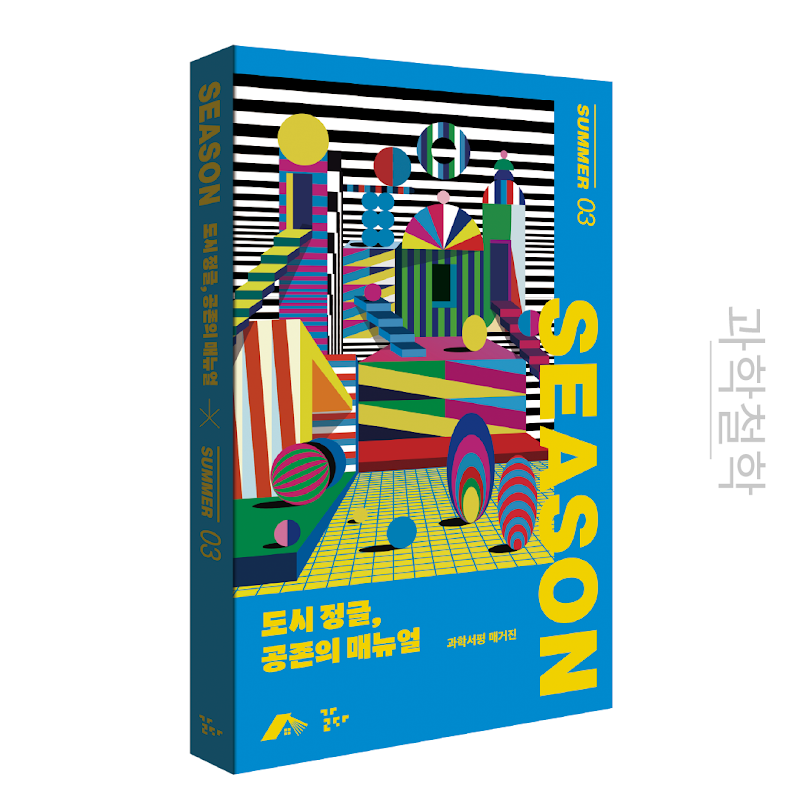
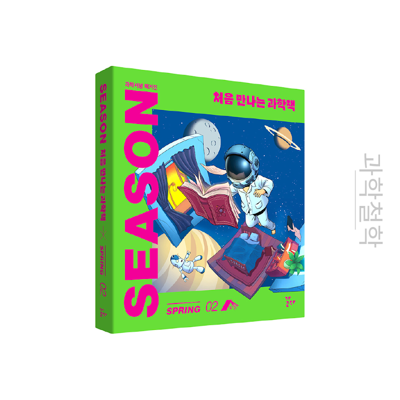
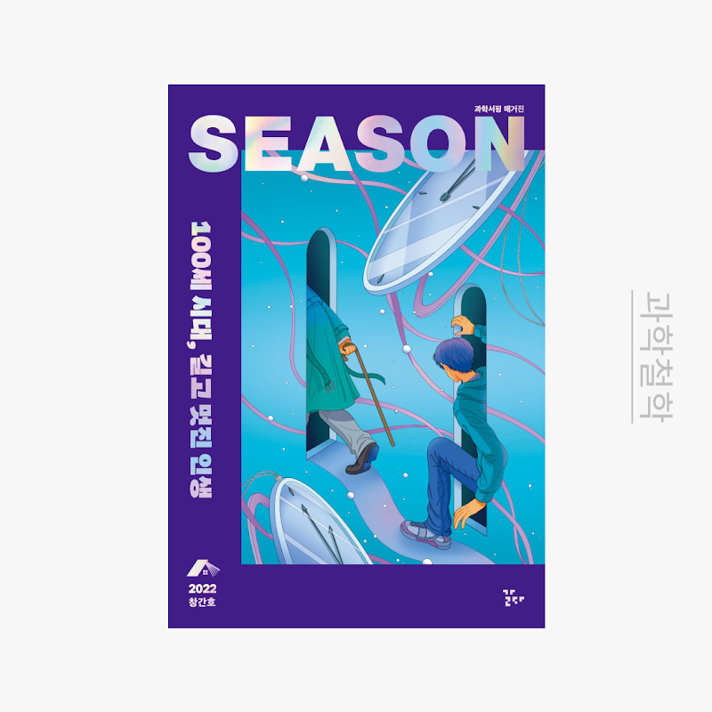

과학책을 읽는 새로운 시선, 삶을 이해하는 또 하나의 방법.
과학서평 매거진 《SEASON》은 과학책의 서평과 과학 이야기를 담습니다. 호마다 다른 주제와 독자의 삶을 연결하며, 함께 읽을 책을 제안합니다.
창간호부터 봄호, 여름호까지 각 호의 주제와 소개를 살펴보세요.
정기구독 신청은 마감되었습니다. 과월호의 판매·구매 안내는 원본 페이지에서 확인해주세요.

도시 정글, 공존의 매뉴얼

처음 만나는 과학책

100세 시대, 길고 멋진 인생